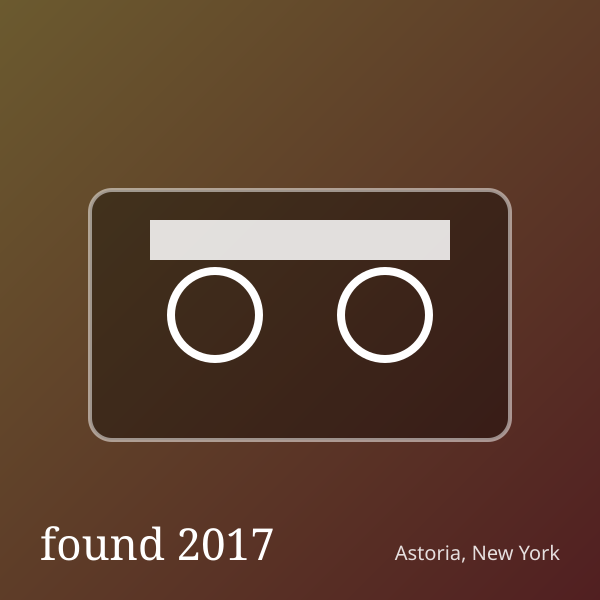

Forty grimy cassettes behind the halal counter
Forty Arab-world cassettes rescued from a halal butcher's shelf in Astoria.

- who
- Unknown artists; found by Gary Sullivan
- what
- Forty shop cassettes from the Arab world
- when
- found 2017
- where
- Astoria, New York
Gary Sullivan's Bodega Pop collects music ripped from cassettes and CDs found in immigrant-run corner shops. On one visit to a halal butcher's in Astoria he came away with some forty grime-encrusted tapes from Algeria, Egypt, Iraq, Lebanon, Morocco, Saudi Arabia, Syria, Turkey and the Emirates.
Most are commercial tapes nobody outside a diaspora shop would ever see. Some are wedding bands with no names on the j-card, and those are the ones we want.